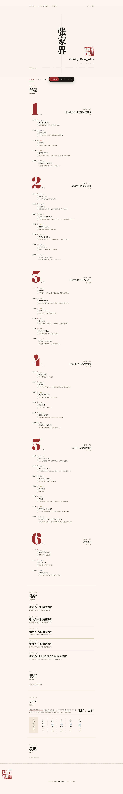

A studio for vehicle product experiences, authored from a single brief — and a cabin that responds to who is in it.
Six days in Zhangjiajie, one screen. Switch between days; the route redraws on the map. Switch POI filters — restaurants, hotels, sights — to see what is around every stop.
The itinerary is a small graph — each day's edges show drive time, walking distance, schedule density. The map and the day-by-day plan are the same data, just two views of it.
Hotel choices live inside the trip — not in a separate tab in a different app. Every night's location is anchored to a sight, a transit station, or a meal stop.
Filters that matter — kid-friendly, breakfast included, near hot springs — come pre-rolled. The price tag and the route impact are read together, in one place.
Flight options surface alongside the rail alternative, the drive time and luggage rules. The trip already knows your home city, so the most useful combinations land first.
Compared side-by-side — arrival time, transit-to-hotel, family seating. The system never lists everything; it lists what is actually shippable into the existing plan.
Send the trip to your spouse, your kid's school, the family group. The shared page renders the same map, itinerary, lodging and flights — no login required.
Re-edits do not break the link. The recipient sees a frozen snapshot at the moment of sharing, while the planner keeps working — two views of the same plan, no version conflict.

For most of automotive history the cabin has assumed a single, average driver. The interesting question is not how to make the cabin smarter — it is how to make it humble enough to keep asking who, exactly, is in it.